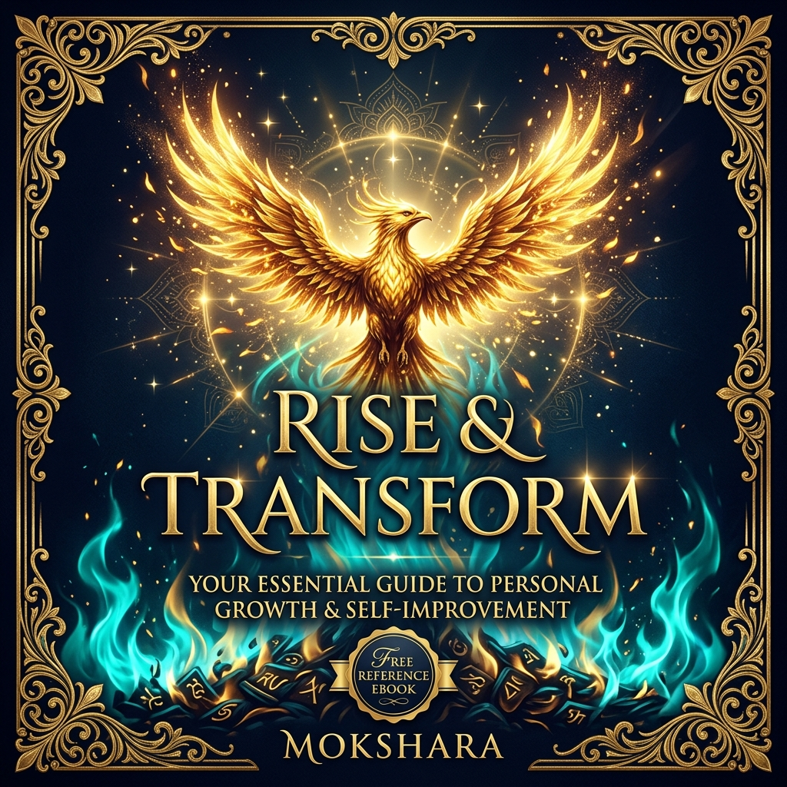
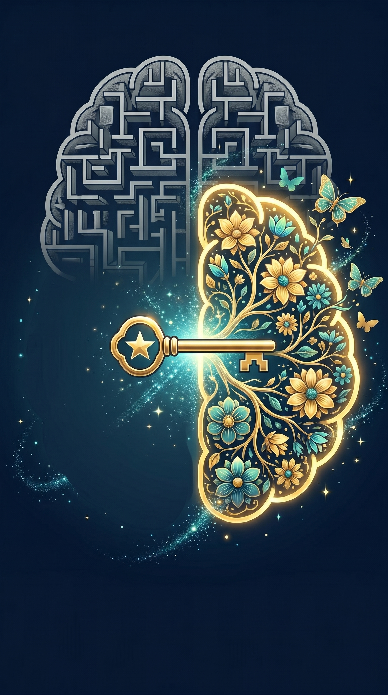
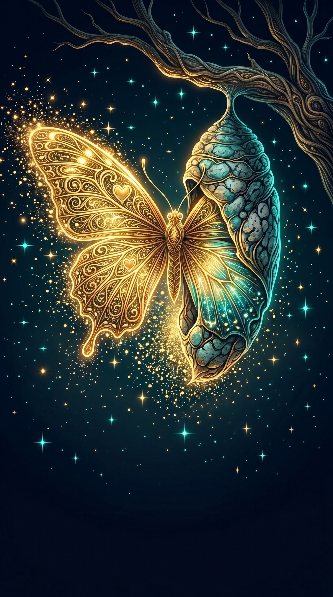
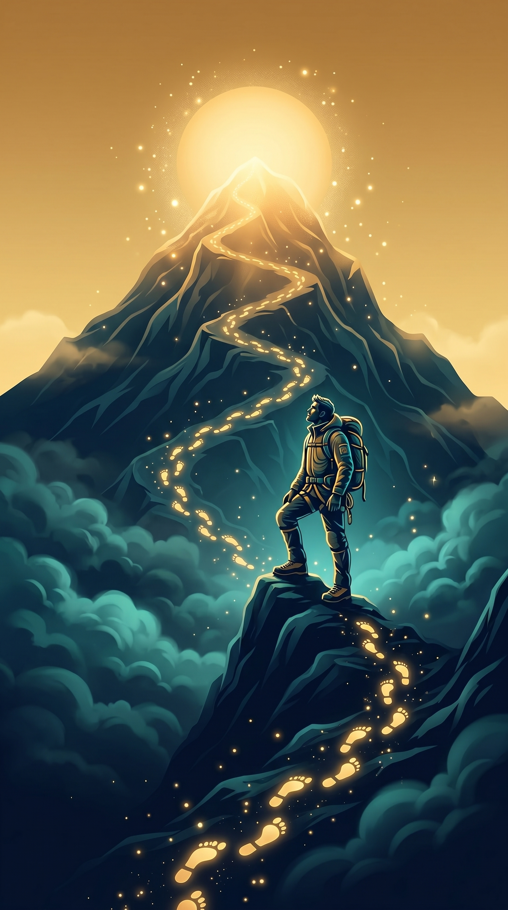
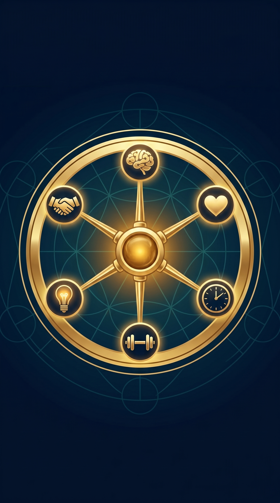

Rise &
Transform
"The only person you are destined to become is the person you decide to be."
— Ralph Waldo Emerson
Rise & Transform
A Mokshara Free Reference Publication
© 2026 Mokshara. All rights reserved.
This is a free reference ebook. You may share it freely, but
reproduction for commercial purposes requires prior written permission.
This ebook is intended for educational and informational purposes only.
It does not constitute medical or psychological advice.
First Edition — 2026
🎁 This ebook is Mokshara's gift to you.
No payment required. Share freely.
mokshara.in
Contents

- 01The Growth Mindset — The Power of "Yet"
- 02The Transformation — From Chrysalis to Wings
- 03Climbing Your Mountain — Goals & Perseverance
- 04The Wheel of Excellence
- 05Rising From Ashes — The Phoenix Practice
The Growth Mindset — The Power of "Yet"

The most important word in personal transformation is not "success," "motivation," or "discipline." It is a three-letter word that changes everything: yet.
"I can't do this" becomes "I can't do this yet." "I don't understand" becomes "I don't understand yet." That single word transforms a closed door into an open road. This is the foundation of what Stanford psychologist Dr. Carol Dweck calls the Growth Mindset — the belief that your abilities are not fixed traits, but skills that develop through effort, strategy, and learning from failure.
The Neuroscience
Dweck's research showed that students praised for effort ("You worked really hard") outperformed those praised for intelligence ("You're so smart") by significant margins. Why? Because effort-based praise builds a growth mindset, while intelligence-based praise creates a fixed one. Brain scans reveal the difference: growth-minded individuals show increased activity in the dorsolateral prefrontal cortex when making errors — their brains actively engage with mistakes as learning opportunities. Fixed-minded individuals show amygdala activation — treating errors as threats.
Fixed vs. Growth — The Shift
- Fixed: "I'm not a math person" → Growth: "I haven't found my math strategy yet"
- Fixed: "Failure means I'm not good enough" → Growth: "Failure means I found one way that doesn't work"
- Fixed: "If I have to try hard, I must be bad at this" → Growth: "Effort is how mastery is built"
- Fixed: "Other people's success threatens me" → Growth: "Other people's success inspires and teaches me"
- Fixed: "Feedback is criticism" → Growth: "Feedback is information I can use"
The "Yet" Journal — 7-Day Practice
- Each evening, write down one thing you struggled with today
- Add the word "yet" to the end: "I couldn't finish the presentation yet"
- Below it, write one micro-step you can take tomorrow to move closer
- After 7 days, read your entries. Notice how "yet" has reframed your struggles from failures into processes
You are not defined by what you cannot do today. You are defined by what you are willing to learn tomorrow. "Yet" is not a word — it is a promise you make to your future self.
The Transformation — From Chrysalis to Wings

A caterpillar does not simply "grow" wings. Inside the chrysalis, it completely dissolves — its old body liquefies into a formless cellular soup. From that apparent destruction, entirely new structures emerge: wings, antennae, compound eyes — capabilities that were unimaginable in its crawling form. The butterfly is not an upgrade of the caterpillar. It is a completely new being built from the same material.
Personal transformation works the same way. The most profound growth in your life will not feel like a smooth evolution. It will feel like falling apart. The job you lose, the relationship that ends, the identity that crumbles — these are not punishments. They are the chrysalis phase. The dissolution that precedes re-creation.
"Just when the caterpillar thought the world was over, it became a butterfly."
— Chuang TzuThe Three Phases of Transformation
Phase 1 — The Ending: Something old must die — a habit, a belief, a version of yourself. This is the hardest part because your identity is invested in the old structure. Honour what was, but do not cling to it.
Phase 2 — The Neutral Zone: The in-between. You are no longer who you were, but not yet who you will become. This phase feels like confusion, restlessness, or emptiness. It is not emptiness — it is the fertile void from which new life grows. Stay in it. Do not rush through it.
Phase 3 — The New Beginning: New energy, new clarity, new purpose emerge — often from unexpected directions. This phase is not planned. It is allowed. You don't think your way into a new life — you live your way into new thinking.
The Neuroscience
Neuroscientist Dr. Michael Merzenich's research on neuroplasticity proves that the brain can fundamentally reorganise itself at any age. When you learn a new skill, break a habit, or adopt a new belief system, your brain physically rewires — pruning old synaptic connections and strengthening new ones. The discomfort of change is literally the sensation of new neural pathways being carved. It feels hard because it is building something new.
If everything in your life feels like it is falling apart, consider this: perhaps it is falling into place — a new arrangement that your old self could never have imagined.
Climbing Your Mountain — Goals & Perseverance

Most people fail at goals not because they lack talent, but because they set the wrong kind of goals. They aim for outcomes they cannot directly control ("Get promoted," "Lose 10 kg," "Become successful") instead of process goals they can control every single day ("Practice my skill for 30 minutes," "Walk for 20 minutes," "Complete one meaningful task").
James Clear, author of Atomic Habits, puts it simply: "You do not rise to the level of your goals. You fall to the level of your systems." A goal without a daily system is a wish. A system without a grand goal is a path. You need both — but the system is what carries you.
The Neuroscience
Dopamine — the brain's motivation molecule — is not primarily released when you achieve a reward. It is released during the anticipation of reward and during the pursuit itself. This means your brain is designed to find the journey more neurologically rewarding than the destination. When you break goals into small daily milestones, each completion triggers a micro-dose of dopamine, maintaining motivation over months and years.
The Mountain Method — Goal Setting System
- Name your summit: Define one meaningful goal for the next 90 days. Make it specific: "Write the first 3 chapters of my book" not "Write a book"
- Map your base camps: Break the summit into 3 monthly milestones. Each milestone should be completable in 30 days
- Define your daily steps: What is the smallest action you can do every day toward this goal? (Example: "Write 300 words" or "Practice for 20 minutes")
- Track with a streak: Mark each day you complete the daily step. Never break the chain two days in a row — missing once is an accident, twice is the beginning of a new habit
- Celebrate base camps: When you reach a monthly milestone, reward yourself. Celebration locks in the dopamine association with effort
Perseverance Principles
- The 2-Minute Rule: If you don't feel like starting, commit to just 2 minutes. Starting is 80% of the battle — momentum does the rest
- Progress over perfection: A bad page written is infinitely better than a perfect page imagined
- Identity-based goals: Instead of "I want to run," say "I am becoming a runner." Identity drives behaviour
- Environment design: Make the good habit easy and the bad habit hard. Put your running shoes by the door. Delete social media apps from your phone
- Look backward: When discouraged, don't look at the summit — look at your golden footsteps behind you. See how far you have already come
You do not climb a mountain in a single leap. You climb it one step at a time — and every step, no matter how small, changes your altitude forever. Keep climbing.
The Wheel of Excellence

True personal excellence is not about being the best at one thing. It is about cultivating balance across the dimensions of life that matter most. A brilliant career built on a broken body is not success. Financial wealth without meaningful relationships is not prosperity. The Wheel of Excellence is a framework for evaluating and nurturing all six dimensions of a thriving life.
The Six Spokes
🧠 Mind — Continuous Learning: Read for 30 minutes daily. Learn one new skill per quarter. Stay curious. Your brain grows through challenge, not comfort. The mind that stops learning starts declining.
❤️ Heart — Emotional Wellbeing: Practice self-awareness through journalling. Process emotions rather than suppressing them. Use the 4-4-6 breathing technique during stress. Seek therapy without shame when needed.
⏰ Time — Intentional Living: Guard your time fiercely. The Pareto Principle (80/20 rule) applies: 20% of your activities produce 80% of your results. Identify those 20% and protect them. Say no to everything else without guilt.
💪 Body — Physical Discipline: Move for 30 minutes daily. Sleep 7-8 hours. Eat whole foods. Hydrate. Your body is the vehicle for everything else — without it, no goal, relationship, or dream is possible.
💡 Spirit — Creativity & Meaning: Create something — write, paint, cook, build, garden. Creativity is not a luxury; it is a fundamental human need. Find what makes you lose track of time and do more of it.
🤝 Connection — Relationships: Invest in your closest 5 relationships. Be fully present when with people. Listen more than you speak. Give without keeping score. Connection is the foundation of human fulfilment.
The Weekly Wheel Audit
- Each Sunday evening, rate yourself 1-10 on each of the six spokes
- Identify the lowest-scoring spoke — this is your focus area for the week
- Commit to one specific daily action to strengthen that spoke
- At the end of the week, re-rate. Notice the ripple effect — improving one area often lifts others
Excellence is not a destination — it is a practice. You do not become excellent by achieving one great thing. You become excellent by doing small things greatly, day after day, with intention and love.
Rising From Ashes — The Phoenix Practice
Every great transformation story in human history follows the same arc: a person faces devastation, loses everything they thought defined them, enters a period of darkness and uncertainty — and from that darkness, rises as someone stronger, wiser, and more alive than before. The phoenix myth exists in every culture because it describes a universal human truth: we are built to rise.
Rising is not about pretending the fire never happened. It is about letting the fire burn away what was never truly you — the limiting beliefs, the toxic patterns, the identities imposed by others — and discovering what remains. What remains is always your core: your values, your capacity for love, your resilience, and your ability to choose who you become next.
The Neuroscience
Psychologist Angela Duckworth's research on "grit" — the combination of passion and perseverance for long-term goals — found that grit predicts success more reliably than talent, IQ, or socioeconomic background. Grit is not stubbornness — it is flexible persistence. Gritty individuals maintain direction while adapting strategy. Neurologically, grit is associated with strong connectivity between the prefrontal cortex (planning) and the striatum (reward), creating a neural circuit that sustains motivation through setbacks.
"She stood in the storm, and when the wind did not blow her away, she adjusted her sails."
— Elizabeth EdwardsThe Phoenix Reflection — A Closing Exercise
- Name the fire: Write down the hardest experience you have survived. Do not soften it. Honour it fully
- Name what burned: What beliefs, habits, or identities did that experience destroy? (Example: "My belief that I needed others' approval to feel worthy")
- Name what survived: What parts of you emerged intact — or even stronger? (Example: "My ability to be alone without being lonely")
- Name what grew: What new strengths, perspectives, or capacities do you have now that you did not have before the fire?
- Write your phoenix statement: "I survived ______. It burned away ______. But from those ashes, I found ______. And now I rise as ______"
Your Personal Growth Roadmap
- Morning: 5-minute intention setting + 3 gratitude points + "What matters most today?"
- Midday: 10-minute walk or 4-4-6 breathing reset + mindful first bites at lunch
- Evening: Weekly Wheel Audit spoke practice + "Yet" journal + 15 seconds of savouring one good moment
- Weekly: One connection call + one learning session + one creative hour
- Monthly: Review Mountain Method base camp + celebrate progress + adjust strategy
The fire was never the end of your story. It was the beginning. You did not just survive — you transformed. And the wings you have now were forged in the very flames that tried to consume you. Rise.

May You Rise, Always
This book was Mokshara's gift to you — a starting point for a journey that has no end, only deeper beginnings. Every technique, every practice, every insight in these pages is a seed. What you do with them is your garden.
You have everything you need. You always did. Now you know where to look: within.
Relax. Heal. Rise.
Explore the complete Mokshara collection at
mokshara.in/store
Compassion & Connection · Embracing Golden Years